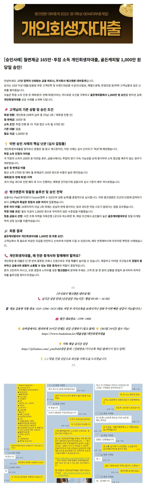
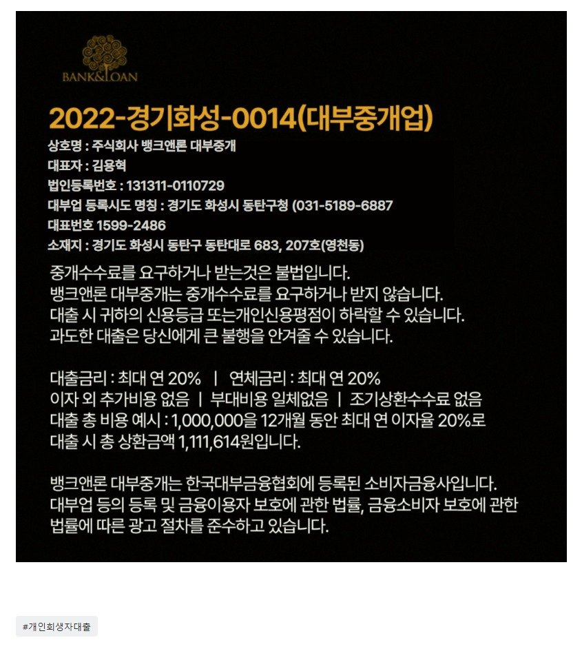

대출사례[난이도 최상급의 승인사례] 투잡 소득합산 월275만원, 월변제금 165만인 상황에서 골든캐피탈 1,000만 원 당일 개인회생자대출 승인!원본 등록일 2026.08.05 · 글 번호 4039 · 백업 당시 조회수 130  https://cafe.naver.com/cityman88/311538 원본 백업에 없거나 외부 접근이 제한된 이미지입니다. [필독사례모음] 개인회생자대출 필독 매니저 사례 (개인회생자대출 알아보시는분들 필독필독!!) [개인회생자대출] 면책후 대부·저축은행 4건 고금리 채무, 13.55% 10년상환으로 깔끔하게 묶어낸 실제 성공 사례! (개인회생중이신분들 필독 필독!!) https://ca... cafe.naver.com  https://cafe.naver.com/cityman88/311957